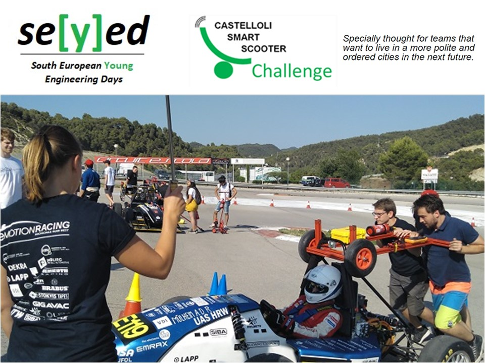

Prof. Palacín at the Castelloli Smart Scooter Challenge 2019
Prof. Palacín from ICMAB was invited to give a technological seminar at the Smart Scooter Challenge, held in Castelloli on July 17th, 2019. She talked about "Battery technologies: concepts, present status and future perspectives”.

More information: http://www.seyed.tech/castelloli-smart-scooter-challenge/schedule.html